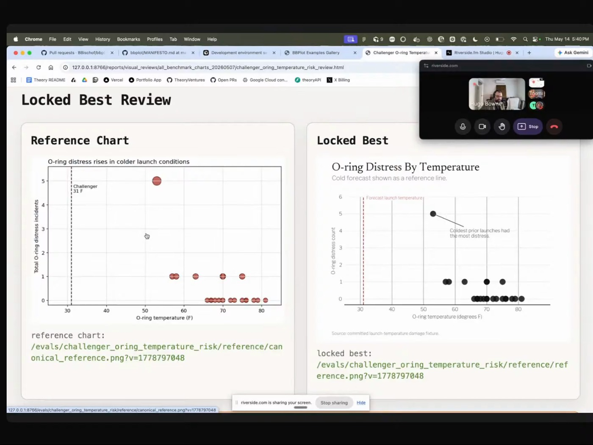
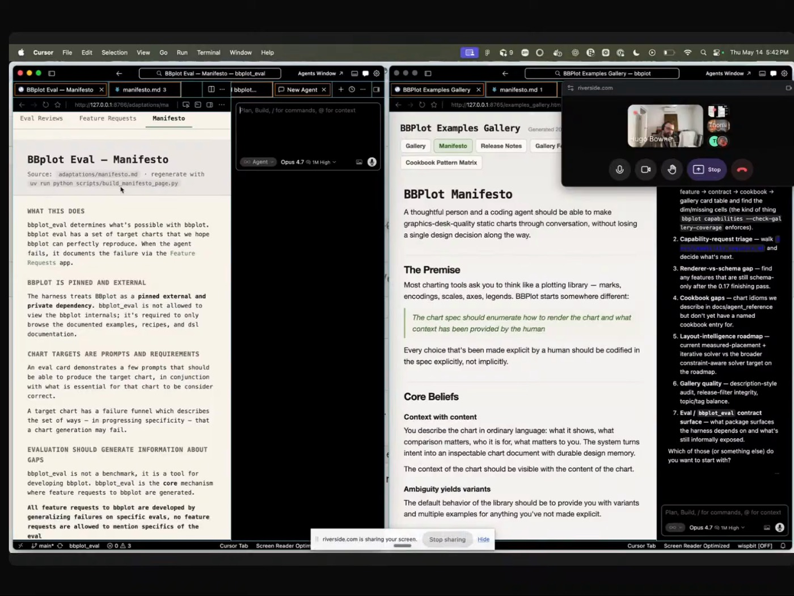
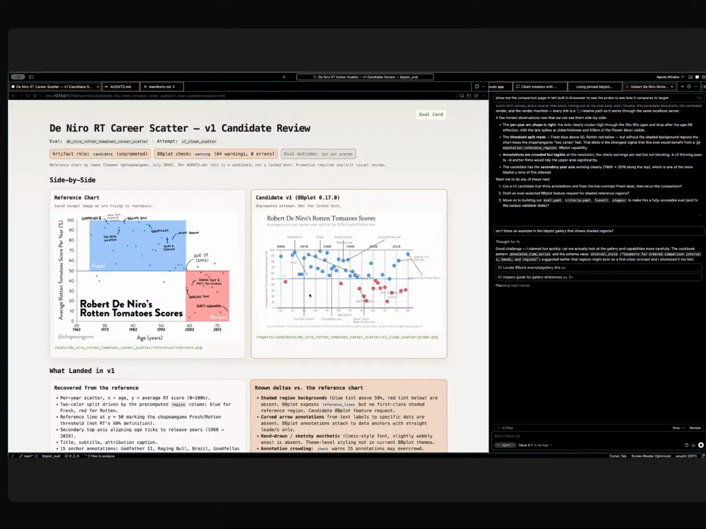

eval-driven-charts
The full write-up of the BBPlot / BBPlot Eval loop: seven principles, the session shape, anti-patterns, and what you need to run it yourself.
 BRYAN BISCHOF
THEORY VENTURES
BBPLOT
EVAL-DRIVEN CHARTS
GRAMMAR OF GRAPHICS
BRYAN BISCHOF
THEORY VENTURES
BBPLOT
EVAL-DRIVEN CHARTS
GRAMMAR OF GRAPHICS
Bryan is designing the grammar of graphics for the agent age. BBPlot packages the human's intent inside the chart spec, generates variants where the ask is ambiguous, and lets a separate eval repo decide what features to build next. He only steps in at the end to say a chart looks bad; the evals do the rest.

"You'll ask for one change, and it will somehow manage to completely break the chart." Everyone who has iterated on a chart with an agent knows this. Bryan's diagnosis: the human's intent lives in the chat, so it gets lost. His fix is to write that intent into the chart itself, the spec records both how to draw the chart and why, so the next turn can't forget.
Then he does something clever. BBPlot is the chart tool. BBPlot Eval is a second, walled-off project that hands fresh agents a target chart and asks them to recreate it using only BBPlot's public examples. Wherever they fail, that's a missing feature. He builds it, and a rule keeps the tool honest: each version can stall, but it can never score worse than before.
Inside the write-up: the seven principles below, the two-repo loop, anti-patterns, and what you need to run it.

"BBPlot is not for humans. BBPlot is for humans plus agents."


"This is intense."
The full write-up of the BBPlot / BBPlot Eval loop: seven principles, the session shape, anti-patterns, and what you need to run it yourself.
BBPlot emits a scene graph so a rendered chart can report what overlaps what. "You care about what's on the chart, but also where they are and how they relate."
Every feature is demonstrated with a spec and an image, linted for. "And yes, it's YAML. Deal with it."
"No, you screwed up again. Make yourself a note", then he reviews the note. Local DuckDB stores every trace and iteration.
"Like all great movements in technology or politics, I started with a manifesto."